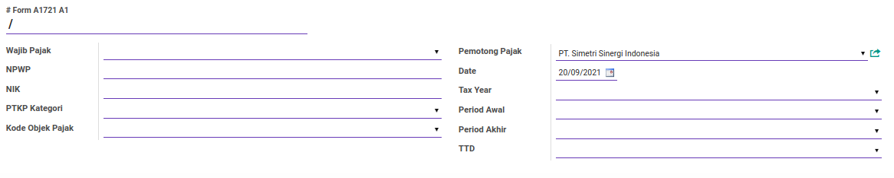
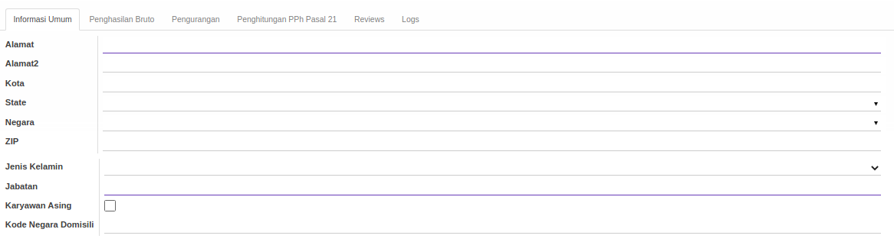
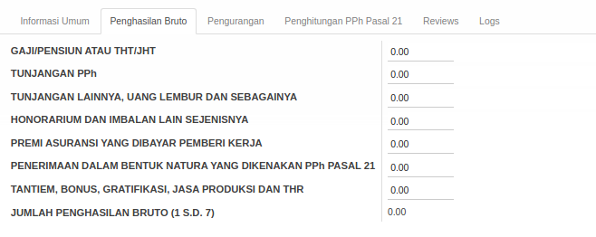
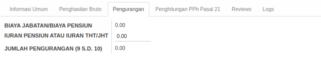
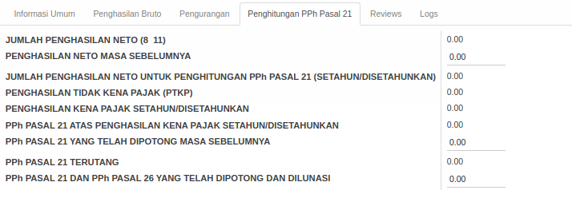
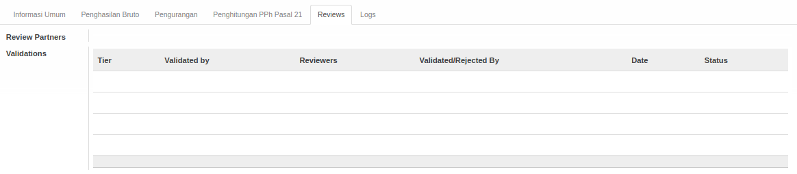
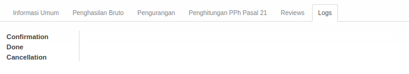

Penjelasan Form 1721 A1
Informasi pada Form 1721 A1 dibagi menjadi beberapa bagian, yaitu:
- Header
- Tab Informasi Umum
- Tab Penghasilan Bruto
- Tab Pengurangan
- Tab Penghitungan PPh Pasal 21
- Tab Reviews
- Tab Logs
HEADER

# Form A11721 A1
Nomor form 1721 A1.
Wajib Pajak
Nama wajib pajak.
NPWP
Nomor NPWP wajib pajak.
NIK
Nomor NIK wajib pajak.
PTKP Kategori
Kategori PTKP wajib pajak.
Kode Objek Pajak
Kode Objek Pajak.
Pemotong Pajak
Nama pemotong pajak.
Date
Tanggal.
Tax Year
Tahun Pajak.
Period Awal
Periode Awal.
Period Akhir
Periode Akhir.
TTD
Nama penandatangan Form 1721 A1.
TAB INFORMASI UMUM

Alamat
Alamat.
Alamat2
Alamat (tambahan).
Kota
Nama Kota.
State
Nama Provinsi.
Negara
Nama Negara.
ZIP
Nomor Kode Pos.
Jenis Kelamin
Jenis Kelamin.
Jabatan
Jabatan.
Karyawan Asing
Jika dicentang, wajib pajak adalah karyawan asing.
Kode Negara Domisili
Kode Negara Domisili Karyawan Asing.
TAB PENGHASILAN BRUTO

Gaji/Pensiun Atau THT/JHT
Gaji/Pensiun Atau THT/JHT.
Tunjangan PPh
Tunjangan PPh.
Tunjangan Lainnya, Uang Lembur Dan Sebagainya
Tunjangan Lainnya, Uang Lembur Dan Sebagainya.
Honorarium Dan Imbalan Lain Sejenisnya
Honorarium dan Imbalan Lain Sejenisnya.
Premi Asuransi Yang Dibayar Pemberi Kerja
Premi Asuransi Yang Dibayar Pemberi Kerja.
Penerimaan Dalam Bentuk Natura Yang Dikenakan PPh Pasal 21
Penerimaan Dalam Bentuk Natura Yang Dikenakan PPh Pasal 21.
Tantiem, Bonus, Gratifikasi, Jasa Produksi dan THR
Tantiem, Bonus, Gratifikasi, Jasa Produksi dan THR.
Jumlah Penghasilan Bruto (1 s.d. 7)
Jumlah Penghasilan Bruto (1 s.d. 7).
TAB PENGURANGAN

Biaya Jabatan/Biaya Pensiun
Biaya Jabatan/Biaya Pensiun.
Iuran Pensiun Atau Iuran THT/JHT
Iuran Pensiun Atau Iuran THT/JHT.
Jumlah Pengurangan (9 s.d. 10)
Jumlah Pengurangan (9 s.d. 10).
TAB PENGHITUNGAN PPh PASAL 21

Jumlah Penghasilan Neto (8 11)
Jumlah Penghasilan Neto (8 11).
Penghasilan Neto Masa Sebelumnya
Penghasilan Neto Masa Sebelumnya.
Jumlah Penghasilan Neto Untuk Penghitungan PPh Pasal 21 (Setahun/Disetahunkan)
Jumlah Penghasilan Neto Untuk Penghitungan PPh Pasal 21 (Setahun/Disetahunkan).
Penghasilan Tidak Kena Pajak
Penghasilan Tidak Kena Pajak.
Penghasilan Kena Pajak Setahun/Disetahunkan
Penghasilan Kena Pajak Setahun/Disetahunkan.
PPh Pasal 21 Atas Penghasilan Kena Pajak Setahun/Disetahunkan
PPh Pasal 21 Atas Penghasilan Kena Pajak Setahun/Disetahunkan.
PPh Pasal 21 Yang Telah Dipotong Masa Sebelumnya
PPh Pasal 21 Yang Telah Dipotong Masa Sebelumnya.
PPh Pasal 21 Terutang
PPh Pasal 21 Terutang.
PPh Pasal 21 Dan PPh Pasal 26 Yang Telah Dipotong Dan Dilunasi
PPh Pasal 21 Dan PPh Pasal 26 Yang Telah Dipotong Dan Dilunasi.
TAB REVIEWS

Review Partners Validations
Nama-nama user yang dapat menyetujui/menolak Form 1721 A1
TABEL Validations
Tahapan-tahapan persetujuan Form 1721 A1
Tier
Urutan persetujuan
Validated By
Metode pemilihan user-user yang dapat menyetujui/menolak Form 1721 A1. Metode pemilihan terdiri dari 3 (tiga) yaitu:
- Specific user. User-user yang dapat menyetujui/menolak Form 1721 A1 ditentukan langsung.
- Any user in specific group. User-user yang dapat menyetujui/menolak Form 1721 A1 adalah user-user yang tergabung dalam kelompok-kelompok user yang ditentukan.
- Both specific user and group. User-user yang dapat menyetujui/menolak Form 1721 A1 ditentukan langsung ditambah dengan user-user yang tergabung dalam kelompok-kelompok user yang ditentukan.
- Python code. User-user yang dapat menyetujui/menolah Form 1721 A1 ditentukan oleh algoritma kode python tertentu
Reviewers
Nama-nama user yang dapat menyetujui/menolak Form 1721 A1 pada tier yang dimaksud.
Validated/Rejected By
User yang menyetujui/menolak Form 1721 A1.
Date
Tanggal dan waktu Validated/Rejected By menyetujui/menolak Form 1721 A1
Status
Status persetujuan, terdiri dari 2 (dua) kemungkinan:
- Approved. Tier disetujui.
- Rejected. Tier ditolak.
TAB LOGS

Confirmation
Waktu konfirmasi dan user yang mengkonfirmasi Form 1721 A1.
Done
Waktu selesai dan user yang menyelesaikan Form 1721 A1.
Cancellation
Waktu batal dan user yang membatalkan Form 1721 A1.